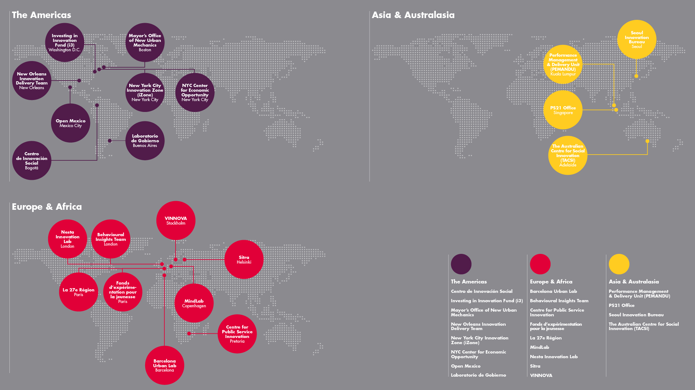

Buenos Aires Ciudad
En todo estás vos

Apertura
Colaboración
Innovación
Laboratorio de datos
Apertura de datos
Laboratorio de nuevas tecnologías
Innovación abierta
Filtrar:
Ver todos los ejes
Apertura de datos
Laboratorio de datos
Innovación abierta
Laboratorio de nuevas tecnologías
Ver todas las prioridades
A
B
C
D
Apertura de datos